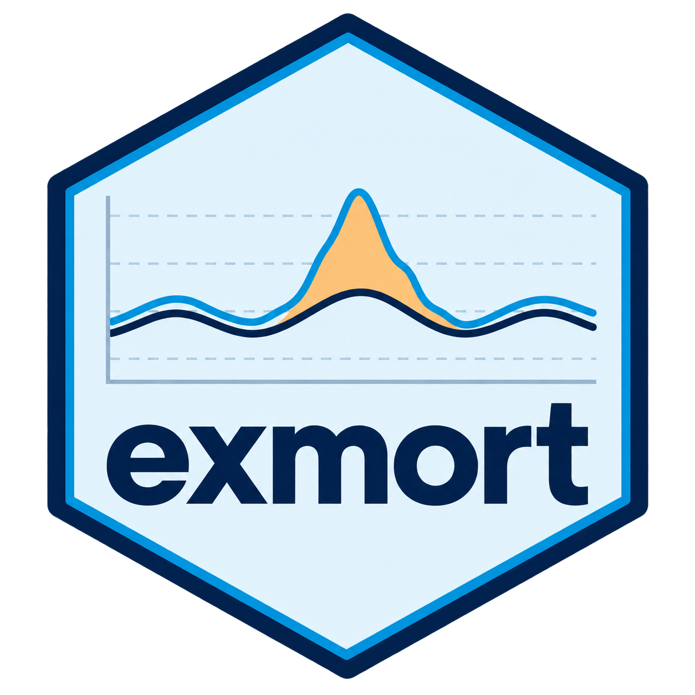

R package
DSIR
Access WHO and UN data, work with country metadata, and create consistent charts and tables.
Public projects
Tools for accessing health data, analysing mortality, exploring results, and learning through practice. Each project has its own documentation and source code.
R package
Access WHO and UN data, work with country metadata, and create consistent charts and tables.

Mortality analysis
Explore all-cause and excess mortality with baseline models, clear plots, and downloadable reports.
Learning & training
Learn to prepare, explore, and explain data through interactive lessons and practical exercises.
Interactive dashboard
Explore public SPAR self-assessment data across years, regions, and countries.
Get in touch about health data analysis, R tools, or data training.